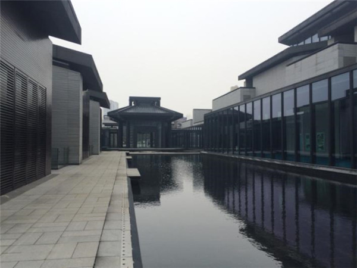
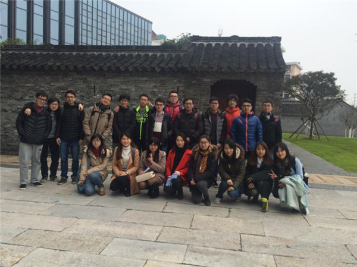
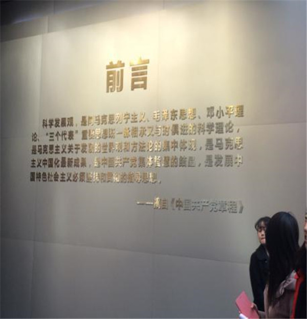
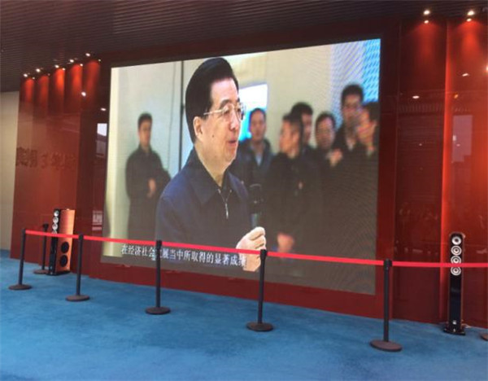
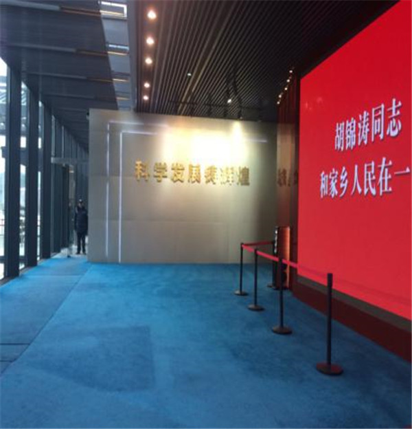
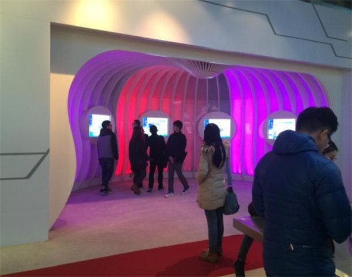

01 泰州科学发展观展示馆 / 泰州（中国）科学发展观展示中心 泰州科学发展观展示馆把主题展示、稻河历史街区、多儿巷一号故居、中央水庭和绿色技术整合成一条有起承转合的参观叙事。Cultural用参观序列整合主题展示与历史节点 中央水庭与滨水玻璃长廊参观照片
02 基本信息 项目内容项目名称泰州科学发展观展示馆；同济大学博物馆资料称“泰州（中国）科学发展观展示中心”英文名称Taizhou Scientific Outlook on Development Exhibition Hall / Center建筑师 / 事务所何镜堂；华南理工大学建筑设计研究院地点江苏省泰州市，稻河历史文化街区南面，西到青年路，东到稻河，南到东进西路建成年份 / 设计年份2010 年 3 月投资建设；2011 年 8 月 12 日竣工开馆建筑类型展示馆 / 纪念展示建筑 / 绿色公共建筑建筑面积总建筑面积 2 万多平方米层数地上两层，地下一层结构体系未检索到可靠结构体系资料主要材料 / 表皮公开资料强调黛瓦、灰墙、青砖色调的现代转译；灰色墙体、黑色屋顶、深灰色钢构架、玻璃长廊、双层中空玻璃业主 / 委托方泰州市稻河古街区建设有限公司施工 / 监理江苏正太集团为施工总承包方；常州常泰建筑装潢有限公司、苏州柯利达建筑装饰有限公司、苏州金螳螂建筑装饰股份有限公司承担外装、内装等施工任务；泰州第二监理公司监理信息可信度medium主要依据来源泰州市住建局、同济大学博物馆、南京大学团委高度、容积率、建筑密度、完整结构体系、节点构造和施工过程未检索到可靠公开资料，不作推测。
03 资料质量与证据密度 资料状态：partial是否有一级资料：是，泰州市住建局页面可用于项目身份、面积、位置、层数、设计方、建造时间、参观序列、材料转译和绿色技术。建筑专业媒体数量：0。未保留到 gooood、ArchDaily、有方等独立项目报道。已覆盖分析项：concept / context / program / circulation / facade_material / structure_construction / user_experience / urban_relationship资料最充分的方向：总体定位、空间叙事、中央水庭、地域材料转译、绿色建筑技术。资料明显不足的方向：平面剖面、结构体系、节点构造、施工过程、运营后评价。需要人工复核：专业媒体缺失；图片来自参观记录，适合作学习参考，不等同于官方摄影授权。
05 场地信息表 场地维度与设计回应相关的信息场地区位位于稻河历史文化街区南面，夹在青年路、稻河、东进西路之间人文环境参观序列以多儿巷一号，即中央主要负责同志旧居，作为重要对景和高潮城市尺度同济大学博物馆资料指出基地处在“旧与新、小机理与大尺度、历史街区与城市道路之间”交通与边界西侧城市道路、东侧稻河、南侧东进西路共同形成复杂边界服务人群展示馆服务公众参观、思想教育、城市文化展示及建筑学习参访场地核心矛盾主题意义重大，但基地处在旧城肌理与现代城市道路之间，既要纪念性也要与传统街区相容
06 诊断 来源明确：项目基地位于稻河历史文化街区南侧，并与多儿巷一号形成紧密关系。泰州市住建局资料强调展馆以多儿巷一号为参观序列的重要对景和高潮；同济大学博物馆资料进一步概括其处在旧与新、小机理与大尺度、历史街区与城市道路之间。基于资料的归纳判断：项目的核心问题不是单纯“建一个展示馆”，而是在旧城边界中组织一条从城市进入、展厅展开、水庭过渡、故居收束的叙事路径。
07 定位 来源明确：同济大学博物馆资料将项目定位为“和谐与发展”，并指出总体设计建立“大气整体、主轴统领、重点突出”的格局。泰州市住建局资料则把它描述为充分体现科学发展理念、目标指向国家绿色建筑和智能建筑。基于资料的归纳判断：这个定位把政治主题、地方历史、绿色技术和城市更新捆绑在一起，使建筑既是展示空间，也是旧城价值提升和城市公共形象塑造的一部分。
08 策略 策略：以中央水庭和多儿巷一号组织参观叙事。回应的问题：主题展示容易抽象化，旧城历史资源也容易被孤立保护。对空间 / 形式 / 建造的影响：展厅、玻璃长廊、室外展示区、旧居和民居群被组织成逐层递进的空间序列。 旧有历史建筑与新建展馆并置的参观照片
09 意象与表达 来源明确：泰州市住建局资料记录设计延承泰州民居架构规律，通过黛瓦、灰墙、青砖色调，大块面灰墙、黑色屋顶、深灰钢构架、7.5 公分横向肌理、几何钢架和屋脊长条空隙等手法，转译传统民居要素。基于资料的归纳判断：项目不是复制传统民居，而是把“宅院、水庭、灰墙、黑瓦、窗花、屋脊”等元素结构化为展馆群的空间和表皮语言。
10 功能梳理 展馆承担科学发展观主题展示、江苏省各市发展资料和规划蓝图展示、视频观看、旧居参观、室外展示等复合功能。南京大学建筑学生参观记录也显示，建筑被同时视作思想教育场所和建筑学习对象。 序厅 / 前言空间参观照片视频展示厅参观照片
11 布局逻辑 来源明确：总体为地上两层、地下一层。主体建筑自东向西展开，以南北两组宅院交融的展厅建筑凸显中央水庭；序厅和谐厅以水面映衬多儿巷一号为对景，滨水玻璃长廊引导观众进入室外展示区并到达多儿巷一号。基于资料的归纳判断：布局逻辑可以概括为“水庭定轴、宅院分组、长廊导览、故居收束”。它把展馆流线和历史节点绑定，降低了大尺度公共建筑对旧城肌理的压迫感。 中央水庭与滨水玻璃长廊参观照片
12 形式构成 来源明确：建筑单元之间组织环环相扣的墙体，形成众多小院落，空间上凸显水、园、宅相依。整体建筑以结构化单元组织有机连接，形成连续完整、富有韵律的建筑群像。基于资料的归纳判断：项目的形式不依赖单一地标体量，而依赖院落群、墙体、屋顶和水庭的连续构成。这种做法适合回应历史街区边界中的尺度过渡。
13 场所与氛围 水面、玻璃长廊、灰墙黑顶和院落系统共同制造了“展馆中的街区感”。公开照片显示室内展陈相对现代、图文视频媒介明确；外部空间则以水庭和旧居对景建立纪念性。 展厅入口与视频展示参观照片互动展陈空间参观照片
15 材料与工艺 来源明确：项目遵循泰州传统建筑中黛瓦、灰墙、青砖的色调，使用大块面灰墙、黑色屋顶和深灰色钢构架进行现代转译；灰墙组织成 7.5 公分横向肌理，几何钢架重译堆瓦窗花，屋脊长条形空隙仿效镂空淮脊。可迁移判断：地域材料转译的关键不是贴符号，而是把尺度、色调、构件逻辑和空间组织一起转化。
16 绿色技术与性能 来源明确：泰州市住建局资料记录展馆采用自然采光布展、绿化庭院与展厅穿插、北面下沉绿化庭院与地下层连通、雨水收集利用、太阳能利用、屋面遮阳板与太阳能电池方阵结合、双层中空玻璃等策略。南京大学团委参观记录补充称该馆达到绿色建筑三星级标准，并提到围护结构保温、淋水玻璃廊、地源热泵、太阳能热水、光伏、绿色照明、透水地面等措施。资料限制：绿色技术条目较完整，但缺少系统图、能耗数据和运营后测评，不能判断实际节能效果。
18 方法 1：用“参观序列”整合政治主题与历史节点 面对的问题：主题展示容易停留在文本陈列，历史故居也容易成为独立景点。具体做法：以序厅、水庭、滨水玻璃长廊、室外展示区、多儿巷一号和民居群组织递进式参观路径。建筑效果：参观者在移动中经历由展馆到故居、由现代展示到历史现场的转换。可迁移方法：纪念展示建筑可以把“叙事高潮”放在场地真实历史资源上，而不是只依赖室内展陈。
19 方法 2：用中央水庭做尺度转换和空间锚点 面对的问题：基地夹在历史街区和城市道路之间，尺度冲突明显。具体做法：南北两组宅院式展厅围合长达百米的中央水庭，并以玻璃长廊引导流线。建筑效果：水庭既是对景、缓冲和导览空间，也是传统宅院与现代展馆之间的转换界面。可迁移方法：在旧城边界做公共建筑时，可用水院、庭院或长廊来消解体量，建立慢行体验。
20 方法 3：从民居构件中提炼现代建筑语法 面对的问题：地方性表达容易变成仿古外皮。具体做法：把黛瓦灰墙青砖色调、左右逢源、灰砖尺度、堆瓦窗花、淮脊空隙分别转译为色彩、钢构架、横向肌理、几何钢架和屋脊空隙。建筑效果：建筑获得传统文化意味，同时保持现代构成和展馆公共性。可迁移方法：地域转译应从色调、尺度、构件关系和空间组织多层同时入手。
21 方法 4：把绿色技术嵌入展示馆空间组织 面对的问题：科学发展主题若只停留在展陈内容，会削弱建筑本身的说服力。具体做法：自然采光、下沉绿化庭院、雨水收集、太阳能利用、双层中空玻璃等与展厅、庭院和屋面系统结合。建筑效果：建筑本体成为“科学发展 / 可持续发展”主题的空间化证据。可迁移方法：主题展示建筑的技术策略应尽量成为可被感知的空间体验，而不是隐藏在设备说明里。
22 对我的设计启发 可迁移方法 1：在旧城中做主题展馆，可以先确定“真实历史节点”，再倒推空间叙事和参观高潮。可迁移方法 2：地域性不应只靠屋顶符号，应同时处理色调、肌理、尺度、院落、路径和材料感。可迁移方法 3：绿色建筑技术若能和自然采光、庭院、地下空间、屋面、雨水景观结合，会比单独列设备更有建筑说服力。不适合直接照搬的部分：政治主题与特定历史人物故居强绑定，不能脱离场地背景复制。可转化成的分析图：旧城边界关系图、参观序列图、中央水庭空间组织图、民居要素转译图、绿色技术叠合图。
23 信息缺口与冲突 未检索到可靠公开平面图、剖面图和节点图。未检索到独立建筑媒体项目页，专业评价维度不足。绿色建筑三星级、地源热泵、淋水玻璃廊等信息来自南京大学团委参观记录，适合作补充线索；若用于正式论文或竞赛分析，应继续核验绿色建筑评价证书或官方技术资料。泰州市住建局页面标题为“泰州科学发展观展示馆”，同济大学博物馆资料称“泰州（中国）科学发展观展示中心”，本包视为同一项目的名称变体。
24 Reference Sources 泰州科学发展观展示馆泰州市住房和城乡建设局【云展览】展览回顾“向大师致敬”系列之一 “地域性、文化性、时代性——何镜堂：为激变的中国而设计”展览同济大学博物馆【建城】科学发展铸辉煌--记13建筑支部泰州科学发展观展示馆之行南京大学团委 / 建筑与城市规划学院学生参观记录